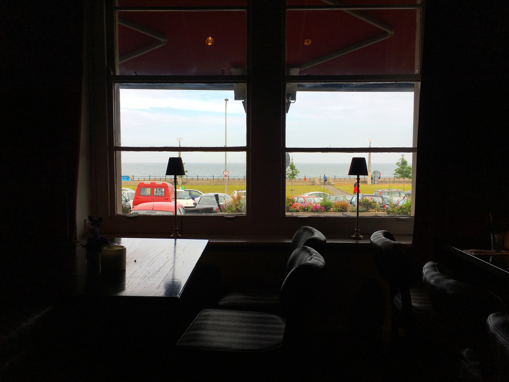

12 Rules for Life: an antidote to chaos
by Jordan Peterson
What are the most valuable things that everyone should know?
In this book, Jordan Peterson provides twelve profound and practical principles for how to live a meaningful life,
from setting your house in order before criticizing others to comparing yourself to who you were yesterday, not someone else today.
Happiness is a pointless goal, he shows us. Instead we must search for meaning, not for its own sake,
but as a defence against the suffering that is intrinsic to our existence.
Quotes from the book
From Rule 2 Treat yourself like someone you are responsible for helping